Disaster recovery with multi region architecture
- Create a pseudo website photo with upload and comment features
- Uploaded photos are stored in an S3 bucket
- The website use Cognito to login and register users
- The website also use the Cloudfront CDN
- 2 DynamoDB tables are used to store current application state and photos comments
- 2 API Gateway are used to directly get and put data on the DynamoDB tables
- S3 bucket, DynamoDB tables and API Gateways are replicated in another AWS region
- If the application state fails (for whatever reason), the application is still available from the other AWS Region
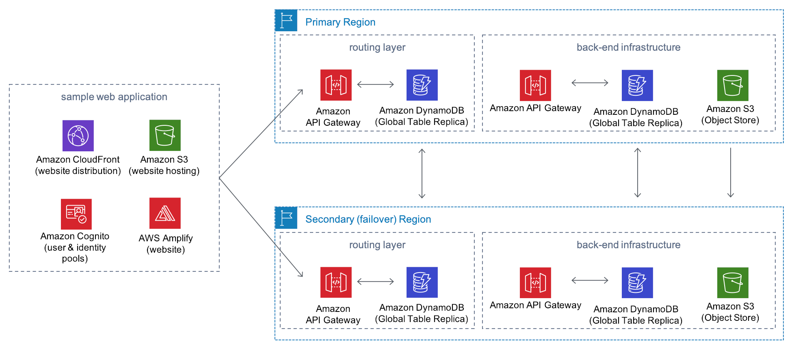
Install and setup the project
Get the code from this github repository :
# download the code
$ git clone \
--depth 1 \
https://github.com/jeromedecoster/multi-region-application.git \
/tmp/aws
# cd
$ cd /tmp/aws
Before setup the project you need to change the email address value :
# use your email address to receive the email sent by AWS Cognito
export COGNITO_EMAIL=CHANGE_EMAIL_HERE@gmail.com
About
This project is an adaptation of this AWS-solutions project
My goal was to use Terraform instead of Cloudformation templates
I also want to remove all configuration lambda functions
The original project is a nice demonstration but not easy to setup. You can check this fork to install it
There is also 2 Youtube videos from AWS Events related to this project :
- Multi-Region deployment – Part 1: Needs, challenges, and approaches
- Multi-Region deployment – Part 2: Architectural best practices
The last chapter of the part 2 video shows the application running
My version of this project is decoupled as if it were 2 separate git repositories :
These 2 projects therefore use separate Terraform projects. With 2 backend configurations hosted in a specific S3 bucket
The frontend project uses data source to retrieve data associated with resources created by the backend project
As can be seen in the cognito.tf file excerpt below :
- The
data "aws_s3_bucket"resource provider - The
data "api_gateway_rest_api"resource provider
data "aws_s3_bucket" "bucket_primary" {
bucket = "${var.project_name}-primary"
}
data "aws_api_gateway_rest_api" "config_primary" {
name = "${var.project_name}-config-primary"
}
Setup config
In the config folder let’s run the following command :
$ cd config
# setup config + terraform remote state S3 bucket
$ make setup
This command will :
- Generate 2 files
config/uuidandconfig/randwhich will contain random data - Create an S3 bucket that will be used to host Terraform’s
backend.tfstateandfronted.tfstatefiles
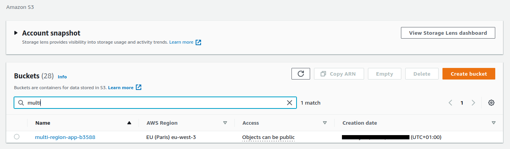
Setup backend
In the backend folder let’s run the following command :
$ cd backend
# terraform setup
$ make setup
The setup command initializes Terraform with a remote state :
# https://www.terraform.io/cli/commands/init
terraform init \
-input=false \
-backend=true \
-backend-config="region=$AWS_REGION_CONFIG" \
-backend-config="bucket=$PROJECT_NAME" \
-backend-config="key=backend.tfstate" \
-reconfigure
And now this command :
# terraform plan + apply (deploy)
$ make apply
The apply command deploys all these terraform files
We have 2 DynamoDB table in each region :
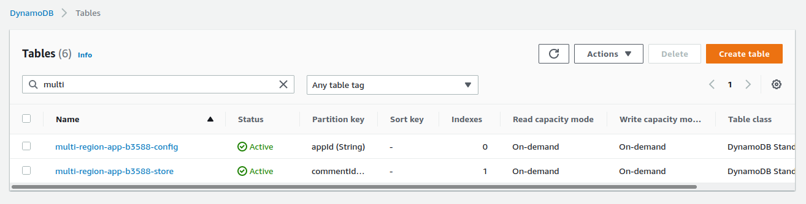
A config DynamoDB table is deployed
We have a table with a single item that describes the current state of the application :
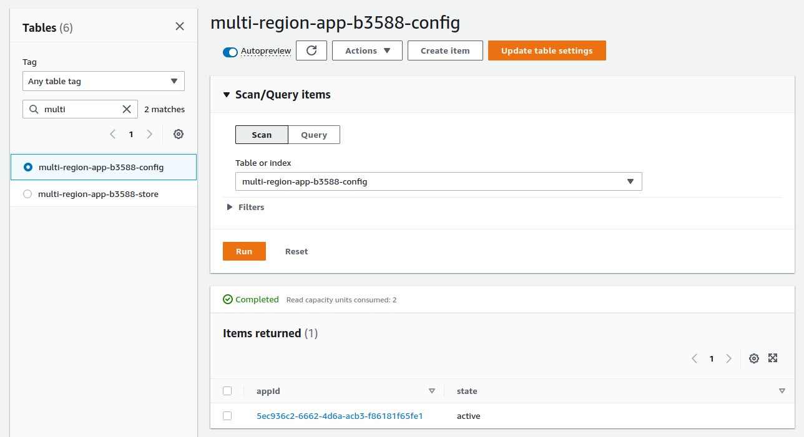
Our application is referenced according to its unique identifier appId which was defined by this HCL code :
resource "aws_dynamodb_table_item" "config_item" {
table_name = aws_dynamodb_table.config.name
hash_key = aws_dynamodb_table.config.hash_key
item = <<ITEM
{
"appId": {"S": "${var.app_state_uuid}"},
"state": {"S": "active"}
}
ITEM
}
The current state of the application is active. In this case, the application behaves normally, everything is managed from the primary region us-east-1
If we set this state to failover, the application will enter disaster recovery mode. Everything will be managed from the secondary region ap-northeast-1
We can imagine that the healthstate of our application is tested via CloudWatch. If a deficiency is detected, the CloudWatch alarm automatically changes the state value from active to failover.
We have 2 API Gateway in each region :
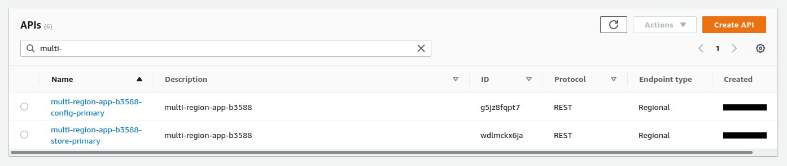
The config API Gateway is deployed :
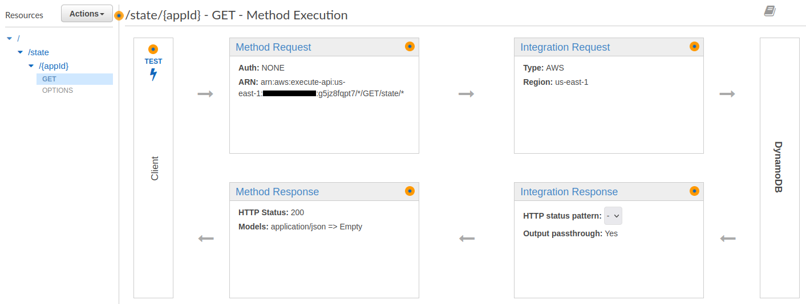
It is particularly interesting to look at the Integration Request Mapping Templates :
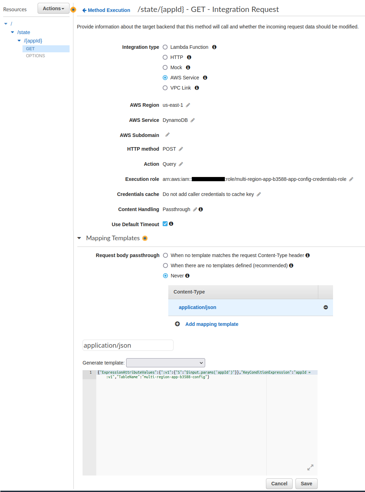
It corresponds to this HCL code :
request_templates = {
"application/json" = jsonencode(
{
ExpressionAttributeValues = {
":v1" = {
S = "$input.params('appId')"
}
}
KeyConditionExpression = "appId = :v1"
TableName = aws_dynamodb_table.config.name
}
)
}
And look at the Response Mapping Templates part :
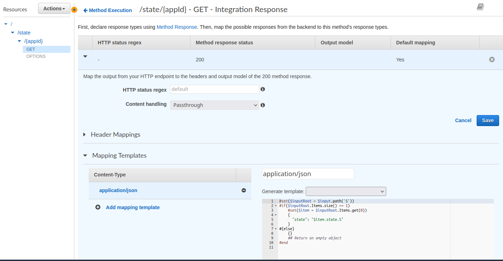
It corresponds to this HCL code :
response_templates = {
"application/json" = <<-EOT
#set($inputRoot = $input.path('$'))
#if($inputRoot.Items.size() == 1)
#set($item = $inputRoot.Items.get(0))
{
"state": "$item.state.S"
}
#{else}
{}
## Return an empty object
#end
EOT
}
We now query the state via this command :
# get application current state from primary region (with apigateway)
$ make get-state-primary
Upload
The upload command allows you to upload a random image. This is the essential initial step for :
- Test file replication within a bucket from one region to another
- Be able to add a comment related to this image
- Test the replication of this comment in the second region table
# upload an image to the primary region (with aws cli)
$ make upload
This command uses imagemagick (assuming it’s already installed on your machine) to convert this test image :
COLORS='aqua black blue chartreuse chocolate coral cyan fuchsia gray green lime magenta'
COLORS="$COLORS maroon navy olive orange orchid purple red silver teal white yellow"
COLOR=$(echo "$COLORS" | tr ' ' '\n' | sort --random-sort | head -n 1)
log COLOR $COLOR
TINT=$(echo '60 80 100 120 140' | tr ' ' '\n' | sort --random-sort | head -n 1)
log TINT $TINT
convert avatar.jpg -fill $COLOR -tint $TINT converted.jpg
The image is uploaded via aws cli :
UUID=$(uuidgen)
aws s3 cp converted.jpg s3://$UPLOAD_BUCKET/public/$UUID
The image is successfully uploaded in our bucket :
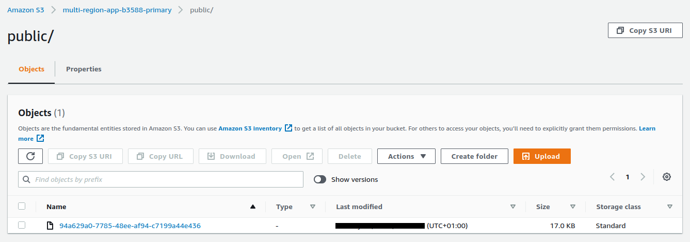
If we open the image in the browser :
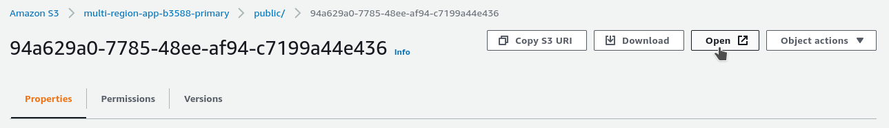
I see the image modified by imagemagick :
The API Gateway store
The API Gateway store allows querying and writing directly to the dynamoDB store table :
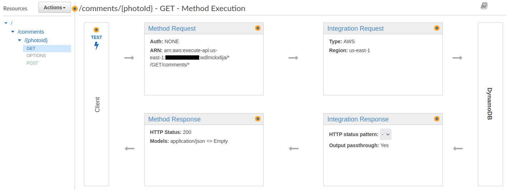
It is particularly interesting to look at the Integration Request Mapping Templates :
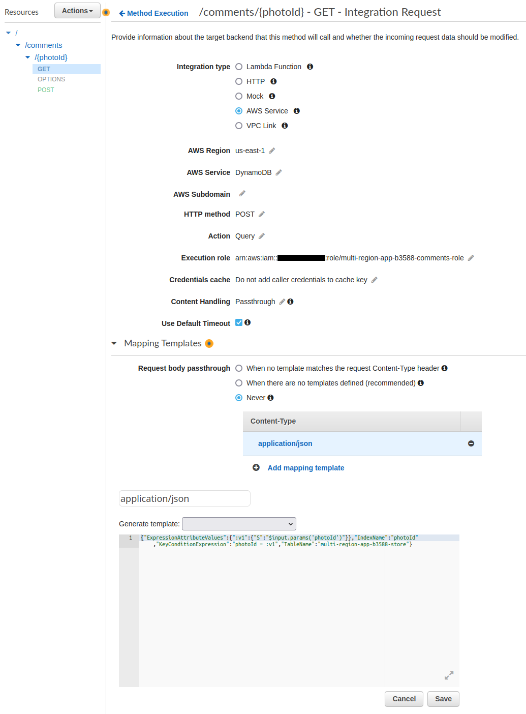
Here is the HCL code :
request_templates = {
"application/json" = jsonencode(
{
ExpressionAttributeValues = {
":v1" = {
S = "$input.params('photoId')"
}
}
IndexName = "photoId"
KeyConditionExpression = "photoId = :v1"
TableName = aws_dynamodb_table.store.name
}
)
}
The Response Mapping Templates :
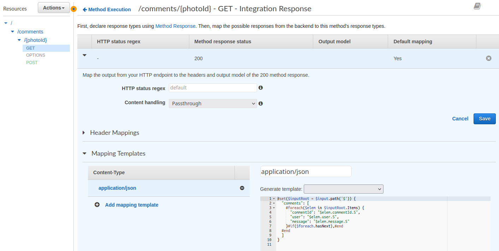
Here is the HCL code :
response_templates = {
"application/json" = <<-EOT
#set($inputRoot = $input.path('$')) {
"comments": [
#foreach($elem in $inputRoot.Items) {
"commentId": "$elem.commentId.S",
"user": "$elem.user.S",
"message": "$elem.message.S"
}#if($foreach.hasNext),#end
#end
]
}
EOT
}
You can get a comment associated with a photo via this command :
$ make get-comment-primary
{
"comments": []
}
The script get the id of an image taken randomly from the S3 bucket :
# random photo id
RAND_PHOTO_ID=$(aws s3 ls s3://$BUCKET/public/ | \
sort --random-sort | \
head -n 1 | \
awk '{ print $NF }')
The script then queries the API Gateway via :
curl --silent $PHOTOS_API/comments/$RAND_PHOTO_ID | jq
The following command adds a random comment to an image :
# add a comment to a random photo at primary region (with apigateway)
$ make add-comment-primary
This command runs this script :
DATA='{"commentId":"'$UUID'", "message":"message '$RANDOM'", "photoId":"'$RAND_PHOTO_ID'", "user":"'$COGNITO_USERNAME'"}'
curl $PHOTOS_API/comments/$RAND_PHOTO_ID \
--header "Content-Type: application/json" \
--data "$DATA"
Invoking the get-comment-primary command again, we get the comment :
$ make get-comment-primary
{
"comments": [
{
"commentId": "abca91a3-b331-4ae8-a9fa-da371a712a7c",
"user": "jerome",
"message": "message 23632"
}
]
}
We can see that the item has been duplicated to the table located in Tokyo :
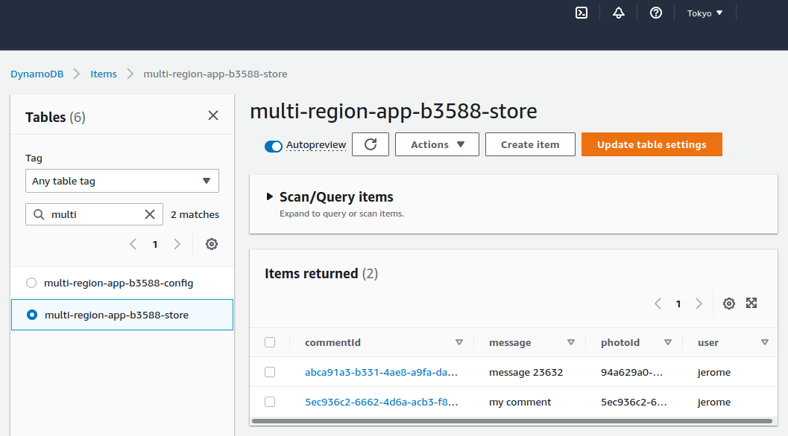
Setup frontend
In the frontend folder let’s run the following command :
$ cd frontend
# terraform setup + npm install the website
$ make setup
Then this command :
# terraform plan + apply (deploy)
$ make apply
The command creates a Cloudfront distribution :
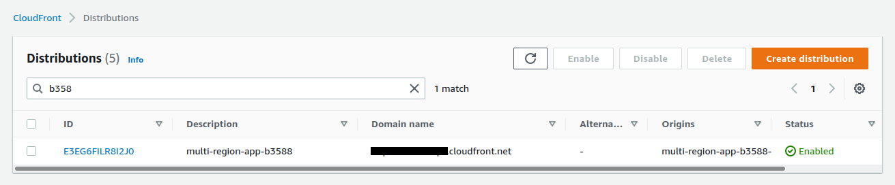
The /console origin :
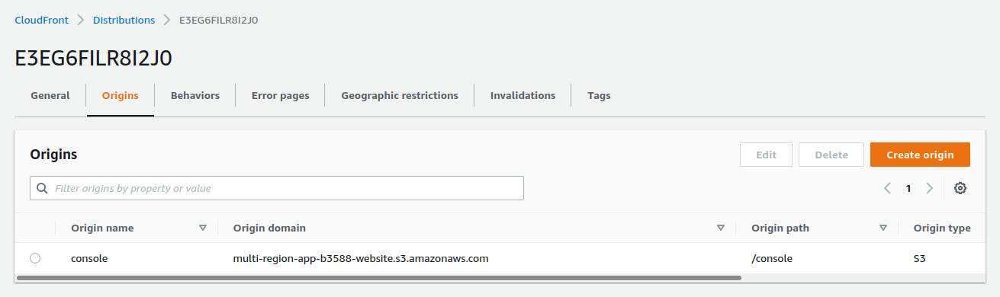
It also creates a Cognito instance :
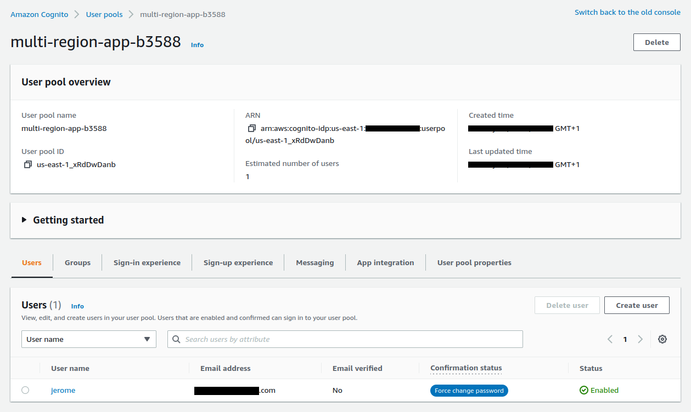
The HCL code also creates a user via an AWS cli call :
# Add aws_cognito_user resource
resource "null_resource" "cognito_users" {
provisioner "local-exec" {
command = <<COMMAND
aws cognito-idp admin-create-user \
--user-pool-id ${aws_cognito_user_pool.pool.id} \
--username ${var.cognito_username} \
--user-attributes Name=email,Value=${var.cognito_email} \
--region ${var.primary_region}
COMMAND
}
}
An email has been sent with our password :
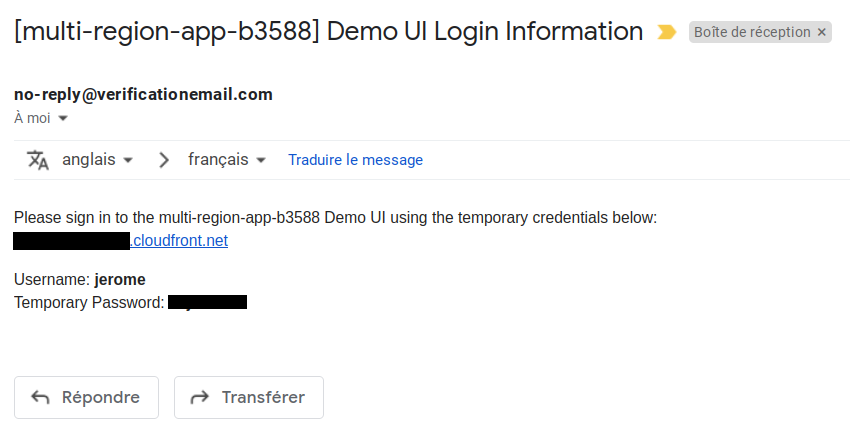
The config file
The website is a react application that loads its initial data from a json file uiConfig.json :
This file contains all the URLs and variables needed for the application to work
We will generate this file with this command :
# generate the uiConfig.json file
$ make ui-config
This command get the variables :
IDENTITY_POOL_ID=$(echo "$FRONTEND_JSON" | jq --raw-output '.identity_pool_id.value')
USER_POOL_CLIENT_ID=$(echo "$FRONTEND_JSON" | jq --raw-output '.user_pool_client_id.value')
USER_POOL_ID=$(echo "$FRONTEND_JSON" | jq --raw-output '.user_pool_id.value')
UI_REGION=$AWS_REGION_PRIMARY
STATE_PRIMARY=$(echo "$BACKEND_JSON" | jq --raw-output '.apigateway_config_url_primary.value')/state/$UUID
BUCKET_PRIMARY=$(echo "$BACKEND_JSON" | jq --raw-output '.bucket_primary.value')
PHOTOS_PRIMARY=$(echo "$BACKEND_JSON" | jq --raw-output '.apigateway_store_url_primary.value')
REGION_PRIMARY=$AWS_REGION_PRIMARY
STATE_SECONDARY=$(echo "$BACKEND_JSON" | jq --raw-output '.apigateway_config_url_secondary.value')/state/$UUID
BUCKET_SECONDARY=$(echo "$BACKEND_JSON" | jq --raw-output '.bucket_secondary.value')
PHOTOS_SECONDARY=$(echo "$BACKEND_JSON" | jq --raw-output '.apigateway_store_url_secondary.value')
REGION_SECONDARY=$AWS_REGION_SECONDARY
And write the file :
JSON=$(cat <<EOF
{
"identityPoolId": "$IDENTITY_POOL_ID",
"userPoolClientId": "$USER_POOL_CLIENT_ID",
"userPoolId": "$USER_POOL_ID",
"uiRegion": "$UI_REGION",
"primary": {
"stateUrl": "$STATE_PRIMARY",
"objectStoreBucketName": "$BUCKET_PRIMARY",
"photosApi": "$PHOTOS_PRIMARY",
"region": "$REGION_PRIMARY"
},
"secondary": {
"stateUrl": "$STATE_SECONDARY",
"objectStoreBucketName": "$BUCKET_SECONDARY",
"photosApi": "$PHOTOS_SECONDARY",
"region": "$REGION_SECONDARY"
}
}
EOF
)
echo "$JSON" > "$PROJECT_DIR/frontend/website/public/uiConfig.json"
Run the local website
To test our website on localhost:3000 the compilation time can be quite long !
# browse the website in localhost
$ make website-local
We can now log in using our credentials received via email :
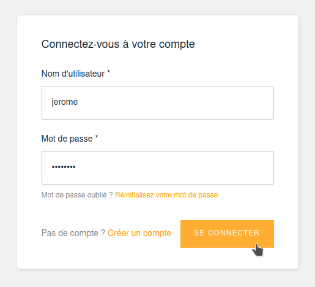
Changing the password :
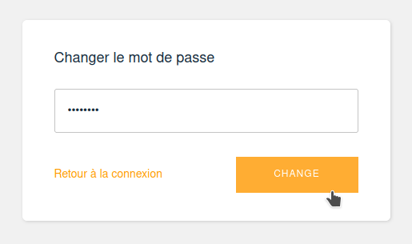
Skipping this step :
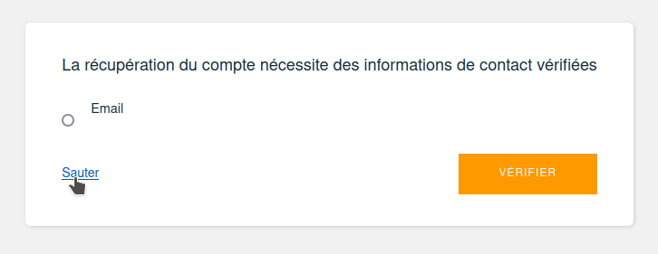
We can see the image that was previously uploaded by script :
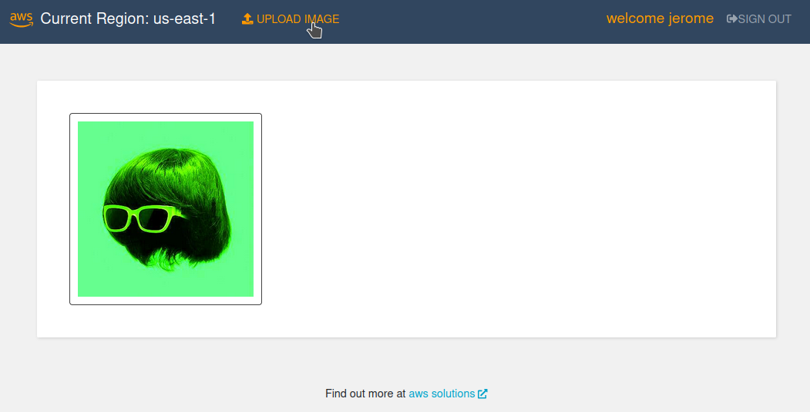
We add an image by uploading it manually :
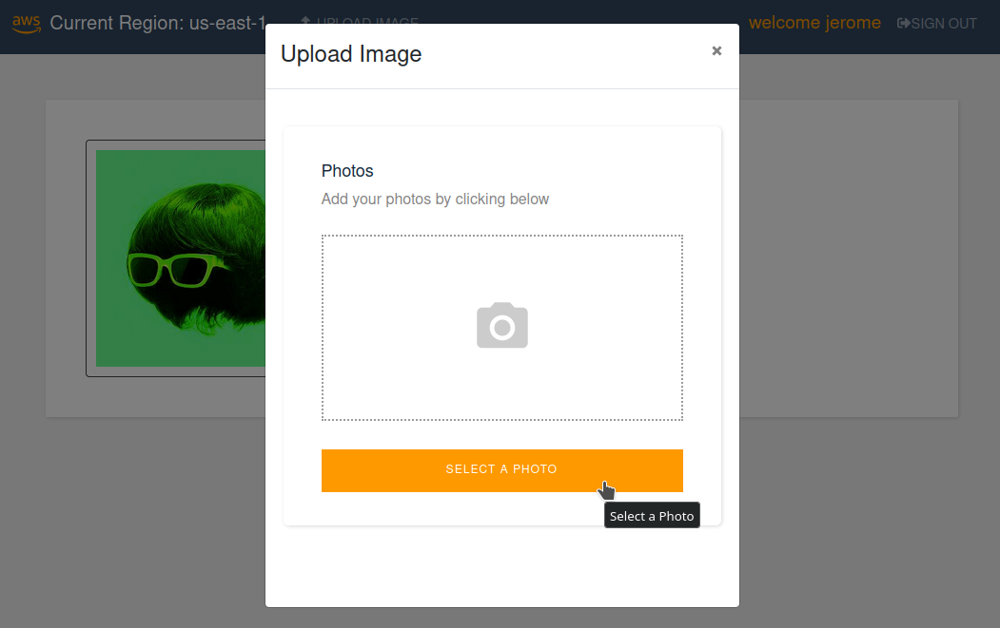
This image is uploaded :
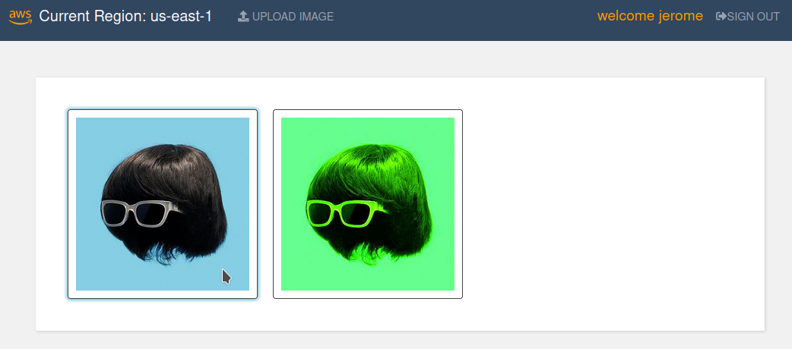
We add a comment :
This image is commented :
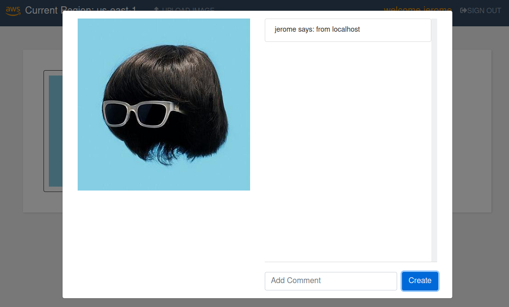
The comment is stored in the dynamoDB table :
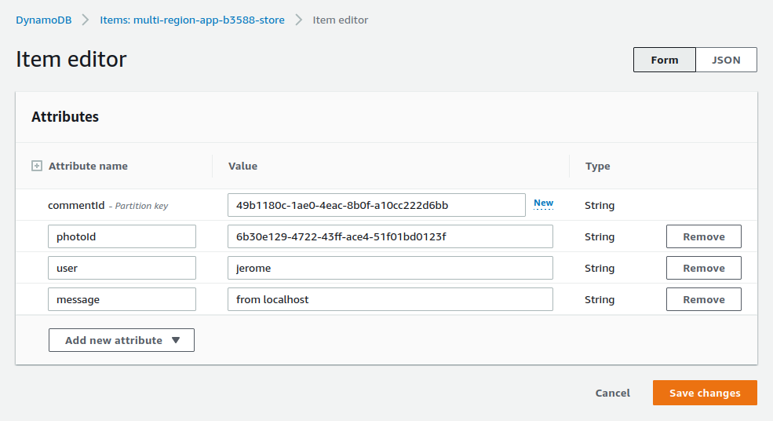
Testing the disaster recovery strategy
We will simulate an important problem and the need to switch to the fallback region via this command :
$ cd backend
# switch application current state (with aws cli)
$ make switch-state
This command get the current value of state and changes it to the opposite value :
CURRENT_STATE=$(aws dynamodb get-item \
--table-name $TABLE_NAME \
--key '{"appId":{"S":"'$UUID'"}}' \
--region $AWS_REGION_PRIMARY \
| jq --raw-output '.Item.state.S')
[[ $CURRENT_STATE == 'active' ]] && NEW_STATE=failover || NEW_STATE=active;
aws dynamodb update-item \
--table-name $TABLE_NAME \
--key '{"appId":{"S":"'$UUID'"}}' \
--update-expression "SET #sn = :sv" \
--expression-attribute-names '{"#sn":"state"}' \
--expression-attribute-values '{":sv":{"S":"'$NEW_STATE'"}}' \
--return-values ALL_NEW \
--region $AWS_REGION_PRIMARY
By reloading our browser, we see that we have changed the reference region :
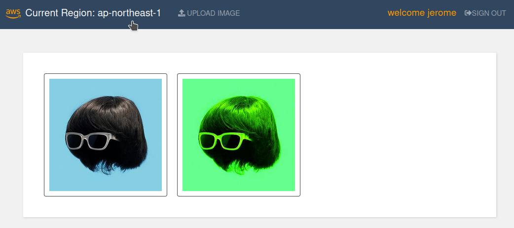
Website deployment
We publish the site with this command :
# deploy the static website to the S3 bucket
$ make website-deploy
Compiling the project can be quite long !
We get the website url with this command :
# get the cloudfront URL
$ make cdn-url
The website navigation should be similar to the experience on localhost
The demonstration is over. We can delete our resources with this 3 commands :
$ cd ../frontend
# destroy all resources
$ make destroy
$ cd ../backend
# destroy all resources
$ make destroy
$ cd ../config
# destroy config + terraform remote state S3 bucket
$ make destroy